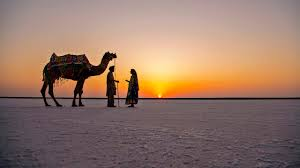
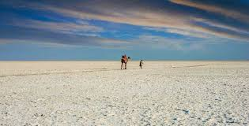

About Rann of Kutch
The Rann of Kutch, located in Gujarat, is one of the world’s largest salt deserts, spreading across more than
7,500 sq. km. Famous for its white salt landscape that glows under the moonlight, the region is home to the
annual Rann Utsav – a vibrant cultural festival showcasing Gujarat’s art, dance, music, and handicrafts.
Why Visit?
- Witness the magical White Desert under the full moon.
- Experience the colorful Rann Utsav Festival with folk dances, music, and camel rides.
- Shop for handmade textiles, embroidery, and handicrafts from local artisans.
- Explore nearby attractions: Kala Dungar (Black Hill), Mandvi Beach, and Bhuj city.
Location & Travel
Nearest Railway Station: Bhuj (~80 km)
Nearest Airport: Bhuj Airport (~86 km)
Well connected by road from Ahmedabad (~400 km, 7–8 hrs drive).
Visiting Details
- Best Time to Visit: November to February (during Rann Utsav).
- Timings: Open all day, but sunrise, sunset, and full-moon nights are most spectacular.
- Entry Fee: ₹100 (Indians), ₹500 (foreigners) for desert entry permit.
Average Travel Expense
A 2–3 day trip to Kutch including food, stay, and travel may cost around:
- Budget: ₹3,000 – ₹4,500 per day
- Mid-range: ₹5,000 – ₹7,500 per day
- Luxury Tents at Rann Utsav: ₹10,000 – ₹18,000 per night (all inclusive)
← Back to Home